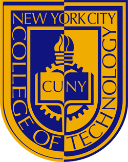
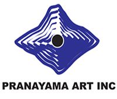
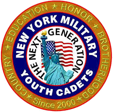

Education
CUNY Queens College
2017-2019
Computer Science, B.A
Flushing, NY
"Relevant Coursework: "
Skills: Java, SQL, Python, HTML/CSS, JavaScript.

CUNY New York City College of Technology
2014-2016
Computer Science, A.A.S
Brooklyn, NY
"Relevant Coursework: "
Skills: C++, Java, MapleSoft
Work Experience

Pranayama Art Inc.
June 2014 - November 2016
Framer and Woodshop
Brooklyn, NY

New York Military Youth Cadets.
October 2012 - May 2014
Editor and ID Staff
Corona, NY
My Resume: Download Resume